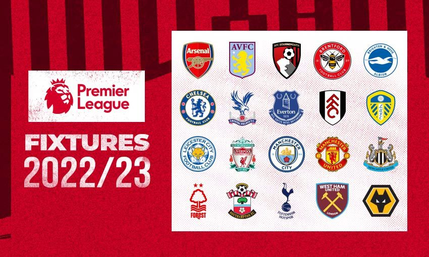
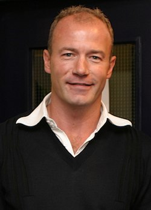

Премье́р-ли́га (англ. Premier League) — профессиональная футбольная лига для английских футбольных клубов (также в ней могут играть некоторые клубы из Уэльса). Является высшим дивизионом в системе футбольных лиг Англии. В ней выступают 20 клубов. Чемпионат проходит с августа по май, каждая команда проводит 38 матчей. До 2016 года турнир официально назывался Премьер-лига Barclays (англ. Barclays Premier League), с 2016 года турнир не имеет главного спонсора. За пределами Англии турнир часто называют «английской Премьер-лигой» (English Premier League).
Турнир был основан 20 февраля 1992 года под названием «Премьер-лига Футбольной ассоциации» (англ. FA Premier League) после того, как клубы Первого дивизиона приняли решение о выходе из Футбольной лиги, основанной в 1888 году, с целью получения большей финансовой выгоды, в первую очередь за счёт получения большей прибыли от продажи прав на телевизионные трансляции. С тех пор Премьер-лига стала самым популярным спортивным чемпионатом в мире. Также она является самой прибыльной футбольной лигой в мире: консолидированные клубные доходы в сезоне 2007/08 составили 1,93 млрд фунтов (3,15 млрд долларов). На данный момент, если судить по таблице коэффициентов УЕФА, Премьер-лига является лучшим национальным чемпионатом в Европе.
В Премьер-лиге выступало 50 различных клубов (48 из Англии и 2 из Уэльса), но лишь 7 из них выигрывали чемпионский титул: «Манчестер Юнайтед» (13 раз), «Манчестер Сити» (6 раз), «Челси» (5 раз), «Арсенал» (3 раза), «Блэкберн Роверс» (1 раз),«Лестер Сити» (1 раз),«Ливерпуль» (1 раз).
Клубы-участники Премьер-лиги в сезоне 2022/23
- Арсенал
- Астон Вилла
- Борнмут
- Брайтон энд Хоув Альбион
- Брентфорд
- Вест Хэм Юнайтед
- Вулверхэмптон Уондерерс
- Кристал Пэлас
- Лестер Сити
- Ливерпуль
- Лидс Юнайтед
- Манчестер Сити
- Манчестер Юнайтед
- Ноттингем Форест
- Ньюкасл Юнайтед
- Саутгемптон
- Тоттенхэм Хотспур
- Фулхэм
- Челси
- Эвертон
История
История образования
Несмотря на значительные успехи английских клубов в еврокубках в 1970-е годы, в конце 1980-х в английском футболе наметился заметный спад. Стадионы были в плохом состоянии, обыденным явлением стало футбольное хулиганство, вдобавок к этому все английские клубы были дисквалифицированы от участия в еврокубках после Эйзельской трагедии 1985 года. Первый дивизион Футбольной лиги, который был высшим дивизионом в английском футболе с 1888 года, сильно отставал от итальянской Серии A и испанской Ла Лиги по посещаемости стадионов и уровню доходов, из-за чего некоторые ведущие английские футболисты отправились выступать за рубежом. Однако в начале 1990-х ситуация начала меняться в лучшую сторону: сборная Англии удачно выступила на чемпионате мира 1990 года, достигнув полуфинала; УЕФА снял пятилетний запрет на выступление английских клубов в европейских кубках в 1990 году. После трагедии на «Хиллсборо» был опубликован Доклад Тейлора, предусматривающий ряд мер по повышению безопасности футбольных стадионов — прежде всего, реконструкцию всех трибун стадионов в полностью сидячие.
Доходы от телевизионных трансляций становились всё более значимыми: в 1986 году Футбольная лига получила 6,3 млн фунтов за двухлетнее соглашение о продаже прав на телетрансляции, а уже в 1988 году сумма нового четырёхлетнего контракта составила 44 млн фунтов. Переговоры 1988 года стали первым предвестником будущего раскола в Лиге: десять клубов грозились выйти из турнира и образовать «супер-лигу», но в итоге их убедили остаться. Но стадионы модернизировались, росла их посещаемость и доходы от продажи билетов, поэтому лучшие клубы страны вновь задумались над возможностью выхода из Футбольной лиги для извлечения большей выгоды из всё более внушительного притока денег в футбол.
Основание (1991)
По завершении сезона 1990/91 поступило предложение об учреждении новой лиги с целью привлечения большего количества денег. 17 июля 1991 года клубы, входящие в Первый дивизион Футбольной лиги, подписали Учредительное соглашение, устанавливающее базовые принципы новой организации, которую решено было назвать Премьер-лигой Футбольной ассоциации (FA Premier League). Новообразованный высший дивизион получал коммерческую независимость от Футбольной ассоциации и Футбольной лиги и мог самостоятельно вести переговоры о продаже прав на телевизионные трансляции, а также заключать спонсорские соглашения. Считалось, что это поднимет уровень английских клубов и позволит им вновь успешно выступать в еврокубках и побеждать лучшие команды Европы, а также привлечет в чемпионат лучших футболистов мира — в 1991 году это казалось фантастикой.
В 1992 году все 22 клуба Первого дивизиона официально вышли из состава Футбольной лиги, а 27 мая того же года была основана Премьер-лига Футбольной ассоциации. Это означало раскол в Футбольной лиге, которая существовала 104 года и включала в себя до этого момента четыре дивизиона. После образования Премьер-лиги в Футбольной лиге осталось три дивизиона. Формат чемпионата не изменился: в турнире приняло участие то же количество команд, что и ранее в Первом дивизионе (22 команды); правила «выхода и вылета» команд между Премьер-лигой и новым Первым дивизионом остались теми же, как между старым Первым и Вторым дивизионами.
Премьер-лигу основали 22 клуба: «Арсенал»,«Астон Вилла», «Блэкберн Роверс», «Челси», «Ковентри Сити», «Кристал Пэлас», «Эвертон»,«Ипсвич Таун», «Лидс Юнайтед», «Ливерпуль»,«Манчестер Сити», «Манчестер Юнайтед», «Мидлсбро»,«Норвич Сити», «Ноттингем Форест», «Олдем Атлетик», «Куинз Парк Рейнджерс», «Шеффилд Юнайтед», «Шеффилд Уэнсдей», «Саутгемптон», «Тоттенхэм Хотспур» и «Уимблдон».
После основания (с 1992 года)
В первом сезоне 1992/93 в Премьер-лиге выступало 22 команды. Первый гол в истории турнира забил футболист «Шеффилд Юнайтед» Брайан Дин в ворота «Манчестер Юнайтед». По указанию ФИФА все национальные первенства должны были сократить количество команд-участников: так, в 1995 году количество клубов в Премьер-лиге было сокращено до 20 (из чемпионата по итогам сезона вылетело 4 команды, а вошло лишь две). 8 июня 2006 года ФИФА потребовал у всех крупнейших европейских чемпионатов, включая итальянскую «Серию A» и испанскую «Ла Лигу», к началу сезона 2007/08 сократить число команд-участников до 18. Премьер-лига ответила отказом на эту инициативу ФИФА. Сезон 2007/08 начался как обычно, с 20 командами-участниками. В 2007 году официальное название турнира было сокращено с «Премьер-лиги Футбольной ассоциации» (FA Premier League) до «Премьер-лиги» (Premier League).
Корпоративная структура
Премьер-лига функционирует как корпорация, владельцами которой являются 20 клубов-участников. Каждый клуб является акционером с одним голосом по вопросам, связанным с изменением правил проведения турнира или спонсорскими контрактами. Для управления Премьер-лигой клубы избирают председателя, исполнительного директора и совет директоров. Футбольная ассоциация напрямую не вмешивается в повседневные операции Премьер-лиги, но, как особый акционер, имеет право вето в ходе выборов председателя и исполнительного директора Премьер-лиги, а также при голосовании по вопросу принятия новых правил турнира.
Премьер-лига посылает своих представителей в Европейский клубный форум УЕФА; конкретные представители от клубов и их количество определяется согласно таблице коэффициентов УЕФА. Европейский клубный форум УЕФА избирает трёх членов в Комитет клубных турниров УЕФА, который занимается вопросами функционирования таких турниров как Лига чемпионов УЕФА и Лига Европы УЕФА.
Формат проведения и спонсоры
Формат соревнования
В настоящее время в Премьер-лиге выступает 20 клубов. По ходу сезона, который длится с августа по май, каждый клуб дважды встречается со всеми остальными клубами: один раз — на своём поле и один раз — на поле соперника. Таким образом, сезон Премьер-лиги для каждого клуба состоит из 38 матчей. За победу в матче команда получает три очка, за ничью — одно очко. В случае поражения команда не получает очков. По завершении каждого сезона клуб, набравший больше всех очков, получает чемпионский титул. В случае равенства очков титул присуждается по разнице мячей, в случае равенства разницы мячей — по забитым голам. Если и после этого определить победителя не удаётся, команды занимают одну и ту же строчку турнирной таблицы. Если при этом требуется определить чемпиона или команду, которая покинет первенство, а также команду, которая квалифицируется в другие турниры, назначается дополнительный матч формата «плей-офф» на нейтральном поле. Три команды, набравшие наименьшее количество очков по итогам сезона, выбывают в Чемпионат Футбольной лиги, а оттуда, соответственно, в Премьер-лигу выходят три команды.
Квалификация в еврокубки
Согласно текущему рейтингу УЕФА, четыре лучшие команды Премьер-лиги по итогам каждого сезона напрямую квалифицируются в Лигу чемпионов УЕФА. Команда, занявшая пятое место, напрямую выходит в Лигу Европы УЕФА. В Лигу Европы могут также выйти клубы, финишировавшие на шестом и седьмом местах, в случае, если победители Кубка Англии и Кубка Английской футбольной лиги уже квалифицировались в Лигу чемпионов. До начала сезона 2008/09 команда, занявшая наивысшее место в чемпионате, но не квалифицировавшаяся в Кубок УЕФА, получала право участия в Кубке Интертото. В 2008 году Кубок Интертото прекратил своё существование, слившись с Кубком УЕФА, который, в свою очередь, начиная с сезона 2009/10 стал называться Лигой Европы УЕФА.
Исключение из этого правила имело место в 2005 году, когда «Ливерпуль», выигравший Лигу чемпионов, завершил чемпионат на пятом месте, не дающем право на квалификацию в Лигу чемпионов. УЕФА выдала «Ливерпулю» специальное разрешение на участие в розыгрыше Лиги чемпионов 2005/06, что увеличило число английских клубов в Лиге чемпионов УЕФА до 5. После этого УЕФА обнародовала правило, согласно которому победитель Лиги чемпионов автоматически квалифицируется в следующий розыгрыш турнира независимо от позиции, которую он занял по итогам сезона в национальном чемпионате. Однако для ассоциаций, которые имеют четыре места в Лиге чемпионов, такая путёвка в турнир для клуба, занявшего место ниже четвёртого, означает исключение из участия в турнире клуба, занявшего четвёртое место.
Весной 2008 года Премьер-лига возглавила рейтинг национальных чемпионатов УЕФА, основанный на выступлении клубов в европейских турнирах за последние 5 лет. Это положило конец восьмилетнему доминированию испанской Ла Лиги. Три национальных европейских лиги с наивысшими рейтингами УЕФА в настоящее время имеют четыре путёвки в Лигу чемпионов. Президент УЕФА Мишель Платини предлагал предоставить одно место из квоты Премьер-лиги победителям Кубка Англии. Это предложение Платини было отвергнуто на голосовании стратегического совета УЕФА.
На этом же совещании было отвергнуто предложение Платини предоставлять победителям Кубка Англии путёвку в Лигу чемпионов, а не в Кубок УЕФА. Тем не менее, было решено предоставлять прямую путёвку в групповой этап Лиги чемпионов клубу, занявшему третье место в Премьер-лиге (ранее такой клуб должен был участвовать в третьем квалификационном раунде), а клуб, занявший четвёртое место в Премьер-лиге, участвует в квалификационном раунде плей-офф для не-чемпионов, в котором встречается с соперником одной из 15 высших лиг Европы. Это является частью плана Платини по увеличению количества команд, выходящих в групповую стадию Лиги чемпионов напрямую, и одновременно увеличению количества команд из более слабых дивизионов
Спонсоры
С 1993 по 2016 годы Премьер-лига имела официального спонсора. Спонсор определял официальное название чемпионата. Ниже представлен список спонсоров Премьер-лиги и официальные названия турнира:
- 1993—2001: Carling (FA Carling Premiership)
- 2001—2004: Barclaycard (Barclaycard Premiership)
- 2004—2007: Barclays (Barclays Premiership)
- 2007—2016: Barclays (Barclays Premier League)
- C 2016 года: нет официального спонсора
Контракт Премьер-лиги с Barclays истёк по окончании сезона 2015/16. Начиная с сезона 2016/17 у Премьер-лиги нет официального спонсора и турнир имеет «чистый бренд» в виде Премьер-лиги.
Кроме того, у Премьер-лиги есть перечень партнёров и поставщиков, который включает Barclays, Carling, EA Sports, Nike и TAG Heuer.
Чемпионский кубок Премьер-лиги
Кубок Премьер-лиги был создан компанией Royal Jewellers (Garrard & Co). Он весит 25 кг, а по размерам составляет 76 см в высоту, 43 см в ширину и 25 см в глубину. Кубок отлит из серебра 925 пробы и покрыт серебряной позолотой, а его основание сделано из малахита. По окружности основания проходит серебряная тесьма, на которой выгравированы названия клубов-чемпионов. Зелёный цвет малахита символизирует зелёный цвет футбольного газона. Дизайн кубка основан на геральдике трёх львов, которые ассоциируются с английским футболом. Два льва расположены над ручками с обеих сторон кубка, а третьего льва символизирует капитан команды-чемпиона, поднимающий кубок над головой на церемонии награждения, и золотая корона, венчающая кубок. Надпись на кубке менялась несколько раз: от оригинальной The F.A. Premier League до The Barclays Premiership, а затем просто Premier League.
Лучшие бомбардиры Премьер-лиги
Кроме командной борьбы, игроки Премьер-лиги соревнуются в сфере признания своего индивидуального мастерства. Для этого существуют неформальные награды, например, «гол месяца» и «гол сезона», а также гонка бомбардиров чемпионата. Бывший нападающий «Блэкберн Роверс» и «Ньюкасл Юнайтед» Алан Ширер является рекордсменом по наибольшему числу голов в Премьер-лиге: в этом турнире он забил 260 мячей. Ширер трижды становился лучшим бомбардиром сезона. В сезоне 1995/96 он стал первым игроком, забившим 100 голов в Премьер-лиге. С тех пор этого результата достигли ещё 22 футболиста.
С первого сезона в Премьер-лиге (1992/93), 13 разных игроков становились лучшими бомбардирами чемпионата (единолично или совместно). Тьерри Анри, забивший 27 мячей в сезоне 2005/06, стал лучшим бомбардиром Премьер-лиги в третий раз подряд и в четвёртый раз в общей сложности. Таким образом, он побил рекорд Ширера, который выигрывал звание лучшего бомбардира чемпионата три раза подряд, с сезона 1994/95 по 1996/97. Майкл Оуэн, Робин Ван Перси, Дидье Дрогба и Джимми Флойд Хассельбайнк становились лучшими бомбардирами первенства дважды. Эндрю Коул и Алан Ширер удерживают рекорд по наибольшему количеству забитых голов в сезоне (34 мяча) — выступая за «Ньюкасл» и «Блэкберн» соответственно. Рекорд Коула пришёлся на сезон 1993/94, а рекорд Ширера — на следующий сезон 1994/95 (оба этих сезона были 42-матчевыми). Бомбардирский рекорд для 38-матчевого сезона принадлежит Салаху, который забил 32 гола в сезоне 2017/18; в сезоне 2007/08 португальский игрок «Манчестер Юнайтед» Криштиану Роналду, установил новый рекорд по количеству голов, забитых в сезоне полузащитником.
«Манчестер Юнайтед» стал первым клубом, забившим 1000 голов в Премьер-лиге. Юбилейный мяч забил Криштиану Роналду в матче против «Мидлсбро» в сезоне 2005/06. После этого лишь три клуба, «Арсенал», «Челси» и «Ливерпуль», смогли достичь отметки в 1000 забитых голов в Премьер-лиге. Самый результативный на настоящее время матч Премьер-лиги состоялся 29 сентября 2007 года, когда «Портсмут» выиграл у «Рединга» со счётом 7:4.
Бывшему игроку «Манчестер Юнайтед» Райану Гиггзу принадлежит уникальный рекорд по забитым мячам: он забивал в 21 сезоне Премьер-лиги подряд.
Лучшие бомбардиры за всю историю лиги:
- Алан Ширер - 260 голов
- Уэйн Руни - 208 голов
- Гарри Кейн - 190 голов
- Эндрю Коул - 187 голов
- Серхио Агуэро - 184 голов
- Фрэнк Лэмпард - 177 голов
- Тьерри Анри - 175 голов
- Робби Фаулер - 163 голов
- Джермейн Дефо - 162 голов
- Майкл Оуэн 150 - голов